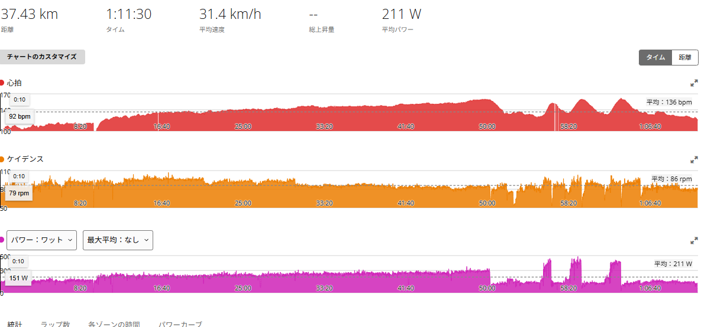
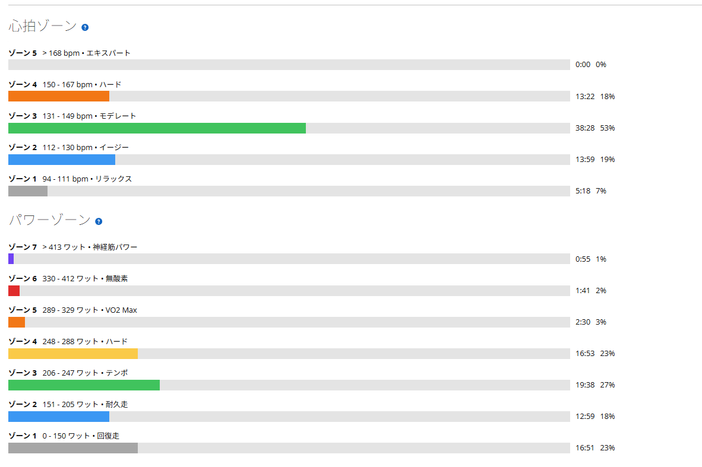

40分走が気づけばSSTに。息苦しさが減ってきたローラー練
昨日はローラーでSST20分×2。その前日はGarminに「無酸素運動不足」と言われて、330W以上を意識した無酸素寄せゴルビー。つまり、ここ数日はわりと負荷が高い。
普通なら今日はもう少し軽くしてもよかった。でも脚と呼吸の様子を見たくなったので、RNC7をローラーに乗せた。当初の予定はテンポ15分と低めSST8分くらい。結果としては少し違った。10分アップのあと40分走になり、最後に短い高出力を足す形になった。

予定より長くなった40分走
今日のメインは40分走。ラップ上では平均246W、NP248W、平均心拍142bpm、平均ケイデンス88rpm。FTP設定が275Wなので、だいたいFTPの89%くらいになる。テンポ上限から低めSSTあたりの強度で40分まとめた感じだ。
体重75kg基準で見ると、この40分の平均246Wは約3.28W/kg。全部の数値をW/kgに変換し始めると記事が表計算になるのでやめておくが、富士ヒルを考えるならこのあたりの数字は一応見ておきたい。
最初の10分はケイデンス91〜95rpmくらいで軽めのギア比。そこから10分ごとに1枚ずつギアを重くしていく感じで進めた。いきなり重いギアで踏むのではなく、回す、慣れる、少し重くする、また慣れる。そういう地味なやつである。

後半に自然と上がった
面白かったのは30分を過ぎたあたりから。気持ちよく回せていたら、自然と270〜280Wくらいまで上がっていた。よし上げるぞ、というより「あれ、ここまでならいけるな」という感覚に近い。
昨日のSST20分×2でも、2本目の後半にゾーンに入ったような感覚があった。今日も40分走の後半で自然に出力が上がった。これがたまたまなのか、最近の練習がつながってきたのかはまだ分からない。ただ、少なくとも悪い方向ではなさそうだ。
息苦しさが減ってきた
最近は以前より、息が苦しいことが減ってきた気がする。もちろん高強度は普通に苦しい。でも前みたいに、呼吸が先に苦しくなって体が固まり、踏めなくなる感じが少し薄い。
体を脱力して、きれいに回す。力任せに踏むのではなく、無駄な力を抜いて回す。書くと当たり前すぎてありがたみがないが、これができるかどうかでパワーの伝達やローラーのしんどさがかなり変わる。パワーを上げる訓練でなく、体を上手く使う訓練。今日はそこを少し感じられた。
最後の高出力もまだ踏めた
40分走のあとは、レストを挟んで短い高出力を入れた。40秒ほどを約388W、その後1分400W、389W2本やって終了。
昨日、一昨日と負荷が入っている中でこれができたのは少し収穫だと思う。もちろん調子が良い時ほど反動も怖い。最近めちゃくちゃ上げられる、と思っている時ほど急に体が文句を言い出すことがある。そこは少し警戒しておく。

Ksyrium SLに替えたけど、主役ではない
ちなみに昨日のローラー落車まわりの関係で、今日はフロントホイールをKsyrium SLにした。正直、軽い気はする。でもカンパのG3の方が好み。
ただ、ローラーだとホイールを軽くした恩恵は外ほど大きくないと思う。外なら加速や登りで軽さを感じやすい。でもローラーでは、実走の登りのように重力に逆らって進むわけではない。だから今日の40分が良かった理由を「Ksyrium SLにしたから」とは言わない方がいい。
今日良かったのは、ホイールよりもここ最近の練習の積み重ねと、体の使い方が少しハマってきたことの方が大きいと思う。ただし、見た目が良いのは大事である。そこは否定しない。
今日やってみて思ったこと
予定どおりのメニューではなかったが、内容としてはかなり良かった。40分平均246W、NP248W。全体ではNP236W、IF0.860、TSS87.6。20分最大平均は263Wだった。
ここ数日のTSSを見ると、無酸素寄せゴルビーが123.2、SST20分×2が95.5、今日が87.6。3日合計で約306TSSになる。これは普通に積んでいる。調子が良いからもっといける、と思いたくなるが、良い感覚を壊さないことも大事だ。
今日の結論は、40分走は予定より強くなった。でも内容としてはかなり良い。息苦しさが減り、脱力して回せる感覚が出てきた。Ksyrium SLは軽い気がするけど、ローラーではたぶん主役ではない。そんなところである。
自分用メモ
- メニュー10分アップ、40分走、レスト、短い高出力3本
- 40分走平均246W / NP248W / 平均心拍142bpm / 平均ケイデンス88rpm
- 全体1時間11分 / 平均211W / NP236W / IF0.860 / TSS87.6
- W/kg75kg基準で40分平均は約3.28W/kg、NPは約3.15W/kg
- 心拍平均136bpm / 最大162bpm
- 汗Garmin推定発汗量 1,131ml